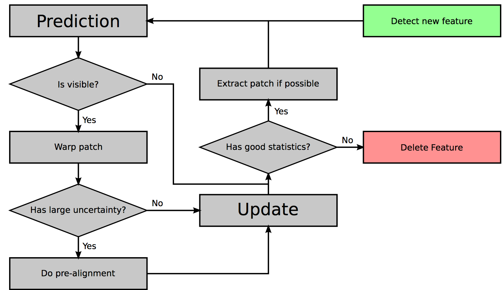

ROVIO解析
基于EKF的鲁棒视觉惯性测量Robust Visual Inertial Odometry, ROVIO
作者博士论文集：Docteral thesis
滤波结构和状态参数
基于扩展卡尔曼滤波:惯性测量用于滤波器的状态传递过程；视觉信息在滤波器更新阶段使用。
定义三个坐标系：
惯性世界坐标帧：$ I $
IMU固定坐标帧：$ B $
相机固定坐标帧：$ V $
对于N个视觉特征点，滤波器状态如下表：
| 参数 | 坐标系 | 描述 |
|---|---|---|
| $r$ | 在IMU固定坐标系$B$中 | IMU在IMU坐标系中的坐标 |
| $v$ | 在IMU固定坐标系$B$中 | IMU在IMU坐标系中的速度 |
| $q$ | 从IMU坐标系$B$映射到世界坐标系$I$ | IMU在师姐坐标系中的姿态 |
| $b_f$ | IMU坐标系$B$中 | 加速计偏差 |
| $b_w$ | IMU坐标系$B$中 | 陀螺仪偏差 |
| $c$ | IMU坐标系$B$中 | IMU-相机外参的平移部分 |
| $z$ | 从IMU坐标$B$到相机坐标系$V$ | IMU-相机外参的旋转部分 |
| $u_i$ | 相机坐标系$V$中 | 特征点i在V中的bearing向量 |
| $\rho_i$ | 无 | 特征i的距离参数 |
上述参数中$u_i$和$\rho_i$是将特征点参数化为相对于当前帧的bearing向量和距离参数。这两个参数来自于Montiel发表的逆深度参数化的工作。[TODO]
参数$(q,z\in SO(3))$，单位向量$u_i \in S^2$。根据Hertzberg的方法来执行计算差分和微分。[TODO]
滤波器的状态传递过程
记加速计测量值，$\tilde{f}$,和旋转测量值$\tilde{w}$。
修正零偏和噪声影响后的IMU加速度和角速度为：
$$
\hat f = \tilde f - b_f - \omega _f \\
\hat \omega = \tilde \omega - b_\omega - \omega_\omega
$$
将IMU加速度和角速度转化给相机，乘以旋转外参，使用$ ^{\times} $表示向量的斜对称矩阵，有：
$$
\begin{align*}
{\hat v} _V & = z(v + {\hat \omega} ^ \times c) \\
{\hat {\omega}} _V & = z({\hat {\omega}})
\end{align*}
$$
构造EKF的连续微分方程如下：
$$
\begin{align*}
\dot{r} & = -\hat{\omega}^\times r + v + \omega _r; & 位置的导数=速度=角速度\times 当前位置+当前速度+速度+位置白噪声 \\
\dot{v} & = -\hat{\omega}^\times v + \hat{f} + q^{-1}(g); & 速度的导数=加速度=角速度\times 当前速度+加速度测量值-重力加速度 \\
\dot{q} & = -q(\hat{\omega}); & 姿态=当前姿态\cdot 角速度 \cdot \delta t, 求导有： 姿态的导数= 当前姿态\cdot 角速度 \\
\dot{b}_f & = \omega _{bf}; & 加速计零偏的导数为0，需要加上白噪声的影响，故而加速计零偏导数=白噪声 \\
\dot{b}_{\omega} & = \omega _{bw}; & 陀螺仪零偏的导数为0，需要加上白噪声的影响，故而陀螺仪零偏导数=白噪声 \\
\dot{c} & = \omega_c; & IMU与相机的平移外参导数为0，加上白噪声的影响，故而平移外参导数=白噪声 \\
\dot{z} & = \omega_z; & IMU与相机的旋转外参导数为0，加上白噪声的影响，故而旋转外参导数=白噪声 \\
\hat{u}_i & = N^T(u_i)\hat{\omega}_V - \begin{bmatrix} 0 & 1 \\ -1 & 0 \end{bmatrix}N^T(u_i)\frac{\hat{v}_V}{d(\rho _i) + \omega_{u, i}}; & \\
\hat{\rho}_i &= -u^T_i \hat{v}_V/d^{\prime}(\rho_i) + \omega_{\rho, i}; &
\end{align*}
$$
其中，$N^T(u)$将在bearing向量$u$附近将三维向量投影到二维切线空间。具体细节作者还没有公布 still under review...。[TODO, $N^T(u)的计算过程在作者博士论文集最后一篇论文中给出$]
滤波器更新过程
对每一帧图像执行一次状态更新。已知相机内部参数，可以计算出bearing向量在图像帧中的像素坐标$p=\pi (u)$。对每一个预测会出现在当前图像中的特征点，计算一个二维的线性约束$b_i(\pi(\hat u _i ))$。这个线性约束编码了特征的亮度误差，可以直接作为Kalman更新的innovation。
$$y_i = b_i(\pi(\hat u _i)) + n_i$$
相应的Jacobian矩阵为：
$$H_i = A_i(\pi(\hat u _i))\frac{d\pi}{d_u}(\hat u _i)$$
通过计算图像中存在的特征点的上述约束，可以执行标准的EKF更新。不过，在新特征点初始化还有较大的距离不确定度时，更新过程可能失败。为了避免新初始化的特征点具有较大的不确定性造成的影响，执行了一个基于patch的特征搜索选择合适的特征点。
对于移动的物体或其他干扰，基于Mahalanobis的外点检测用于更新步骤。对比预测的innovation协方差及获得的innovation，然后加权范数查过某一个阈值的测量值。
多层次patch特征处理
预测阶段，多层次patch特征的新位置使用IMU运动模型来计算。特别地，如果外参的标定和特征距离参数收敛，那么会给出特征位置一个高精度的预测。
单个特征的处理流程如图：

Structure and wraping
对于一个给定的图像金字塔(因子为2的下采样)和一个给定的bearing向量$u$，多层次的patch通过在每一个图像层次$l$相应的像素坐标$p=\pi(u)$处提取固定大小(8x8像素)的patch组合得到。跟踪这个特征对于模糊图像具有鲁棒性。
Alignment Equations and QR-decomposition
使用亮度误差来预对齐特征或者更新滤波状态。对于图像$I_l$给定的一个图像金字塔和一个给定的多层次patch特征(坐标为$p$，patches $P_l$), 亮度误差由下式计算：
图像层次$l$和patch像素$p_j$:
$e_{l,j} = P_l(p_j) - I_l(ps_l + Wp_j) -m$
其中尺度$s_l = 0.5^l$指代下采样。减去平均的亮度误差$m$，可以得到帧间的亮度变化。
应用QR分解来简化计算过程。
未完待续…
2017-07-14 21:57:30